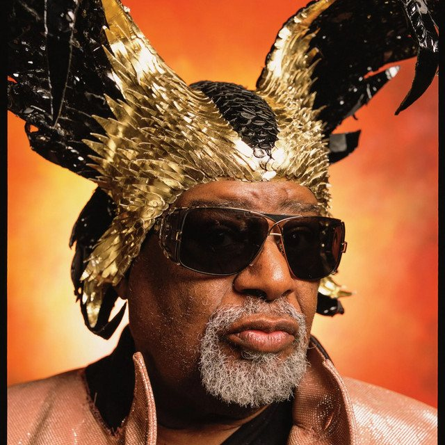
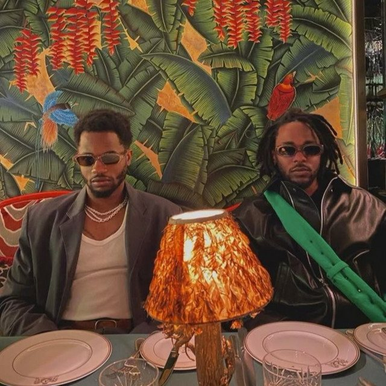

The Eclectic Polymath Podcast · Archive
#009 The Exit Strategy: How Modern Icons Outplayed the Record Label
About this episode
Welcome back to The Eclectic Polymath Podcast, a curiosity driven deep dive show built around the questions that pull us in.
After looking at Motown as a hit making system and the long fight over masters, publishing, and ownership, this episode moves into the modern music machine.
From 99 cent downloads to streaming platforms, catalog sales, billionaire artists, and AI generated parodies, we trace how the music industry changed after piracy cracked the old model wide open.
Key points
- Welcome back to The Eclectic Polymath Podcast, a curiosity driven deep dive show built around the questions that pull us in.
- After looking at Motown as a hit making system and the long fight over masters, publishing, and ownership, this episode moves into the modern music machine.
- From 99 cent downloads to streaming platforms, catalog sales, billionaire artists, and AI generated parodies, we trace how the music industry changed after piracy cracked the old model wide open.
- This episode looks at Steve Jobs and iTunes, the rise of Spotify, the corporate value of artist catalogs, Frank Ocean’s fight for control, Rihanna’s shift from music into business empire building, and the 2024 Drake and Kendrick Lamar battle as a window into the hidden architecture of modern record deals.
More like this

#138 George Clinton: Funk, Mythology, and the Black ImaginationAugust 21, 202638:51
#095 Dave Free: The Systems Architect Behind Kendrick Lamar’s Visual WorldJuly 14, 202646:03 #096 Larry Jackson: Apple Music, gamma, and the Artist-Entrepreneur EraJuly 14, 202648:49#087 The Smiths: Loneliness, Legacy, and the Collapse of a BandJuly 6, 202658:07
#096 Larry Jackson: Apple Music, gamma, and the Artist-Entrepreneur EraJuly 14, 202648:49#087 The Smiths: Loneliness, Legacy, and the Collapse of a BandJuly 6, 202658:07